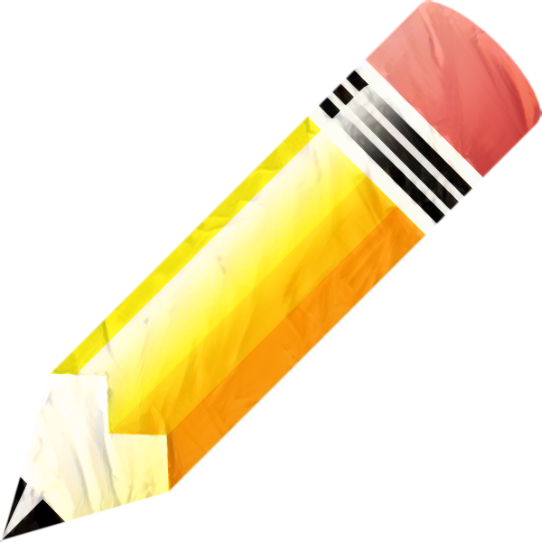

Navodita Sharma, a dedicated Primary Teacher, brings a wealth of passion and expertise to the field of education, with a steadfast commitment to improving India's educational landscape and nurturing students to their fullest potential. With a strong academic background and a profound commitment to fostering holistic development in young learners, Navodita aspires to create a nurturing educational environment where intellectual, social, personal, and emotional growth flourish.
Having pursued her academic journey through esteemed institutions like Delhi University and IP University, Navodita possesses a solid foundation in education. Her credentials include a Bachelor of Elementary Education (B.EL.ED) and a Bachelor of Education (B.ED) with a specialization in Mathematics, which equip her with a deep understanding of pedagogical techniques and subject matter expertise.
Furthermore, Navodita holds a Master of Arts in Psychology from IGNOU, reflecting her holistic approach to education. Her pursuit of lifelong learning extends to her qualifications, including the CTET certification, illustrating her commitment to ensuring quality education.
Navodita's dedication to her role as a Primary Teacher is evident in her professional experience, particularly her internship at Nayi Disha Mental Health Clinic in 2022. Here, she honed her skills in providing a supportive and caring atmosphere for her students, fostering not only academic growth but also their emotional and personal development.
With excellent communication, honesty, an appetite for challenges, active listening skills, and a generous dose of patience, Navodita Sharma is the embodiment of an educator who goes above and beyond to shape the minds and hearts of the next generation. She is poised to continue her journey in education, contributing to the betterment of young minds and playing an integral role in enhancing the quality of education and students in India.
Education
Secondary (10th) - 2009, CBSE
Senior Secondary (12th) - 2011, CBSE
Graduation (B.EL.ED) - 2011-2015, Delhi University
Graduation (B.ED) - Maths - 2015-2017, IP University
Graduation (MA Psychology) - 2019-2021, IGNOU (Distance)
Core Qualifications
CTET (I + II) - 2015, CTET
PG Diploma (Guidance and Counselling) - 2022, Jamie Islamia (Distance)
Experience
Proudcare Foundation - 2015-2020, Home Tutor
Nayi Disha Mental Health Clinic - 2022, Internship